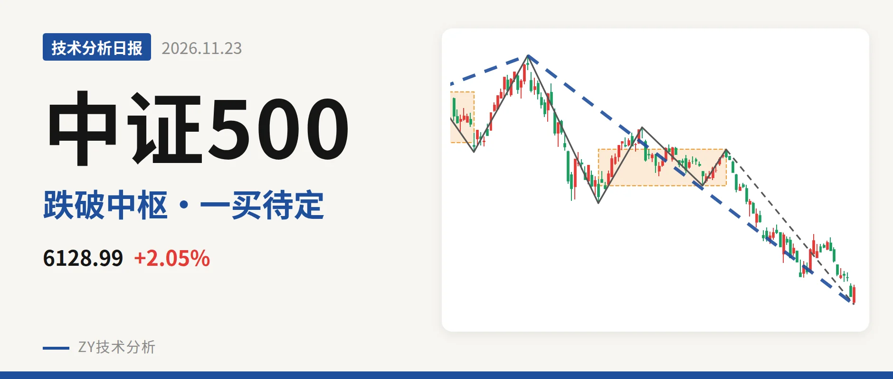
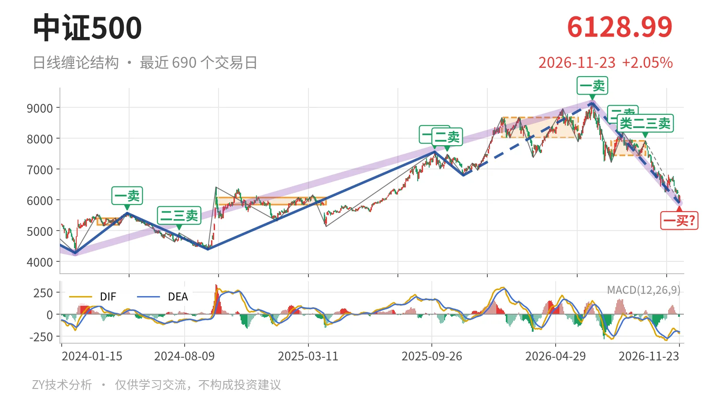
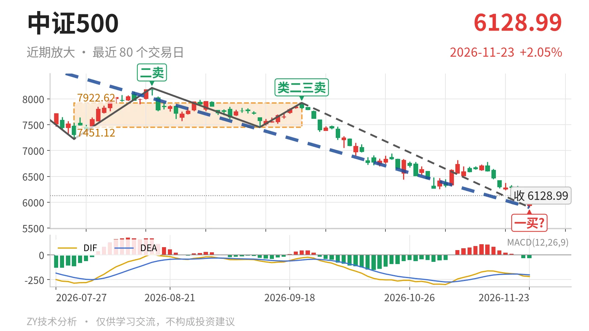

中证500｜失守7451点中枢，5899点一买待定

最近日线中枢 7451.12—7922.62点，收盘位于中枢之下
一句话：跌破最近日线笔中枢下沿，暂定一买无笔级背驰支持。
📉 走势结构：日线处在下跌段，大级别仍是上涨后的回落
日线级别已经进入7月1日以来的下跌段，这段从9147.56点下到5899.96点，跌约35.5%，内部已有5笔，仍在延续。更大级别上，2024年2月5日开始的上涨段未被反向线段完全破坏，但7月1日以来的回落已经重新拉回更大级别中枢范围内，因此这里先看上涨后的回落，而不是大级别单边转涨。日线线段层面，7月1日至11月23日的下跌线段没有结束，先按下跌段处理，暂不当中枢震荡看。

📍 中枢与位置：跌破最近日线笔中枢下沿，中枢下移
最新收盘6128.99点，位于最近日线笔中枢7451.12—7922.62点下方，低于下沿约17.7%。此前1月26日至6月8日中枢中轴还在8343.00点，7月30日至9月22日中枢中轴已降到7686.87点，日线笔中枢是下移的。下方更大的线段中枢5594.30—6263.16点尚未破坏，当前6128.99点仍在其区间内、略高于中轴5928.73点，说明更大级别还没有完全走弱。
🧭 买卖点：卖点逐级下压，一买仍未定
日线笔级别上，7月1日一卖9147.56点、8月18日二卖8211.31点、9月22日类二三卖7922.62点，一个比一个低，这轮下跌不是一次性完成。价格创出5899.96点新低后，这三个卖点只对应日线笔级别，不能当作更大级别转势。11月23日的5899.96点是暂定的一买，因为它所在的9月22日至11月23日下跌笔尚未走完；只要该笔继续下探，这个一买位置就会随笔延续而改变。

⚖️ 背驰：面积缩而DIF不抬，不是典型新低不新弱
最关键的一组同向比较：7月1日至7月30日下跌笔绿柱面积2687，DIF低点-285.2；当前9月22日至11月23日下跌笔价格创出5899.96点新低，绿柱面积缩到1900，但DIF低点下移到-298.6。面积缩小、DIF低点没有抬高，因此不是标准的“新低不新弱”。也就是说，11月23日暂定的一买缺少日线笔级背驰配合，不能把背驰作为这处一买的结构依据。
🔎 关键位置观察：反抽不上7451点，三卖压力仍在
反抽若站不回7451点上方，对7月30日至9月22日中枢就是三卖，短线走势仍偏弱。重新站上7451点一线，这次回落更可能只是中枢扩展，而非直接离开。5899点附近若继续被跌破，说明当前下跌笔还在延续，一买需要重新定位；若5899点不再新低，后面再看反抽能否触及7451点。线段中枢下沿5594点一线若失守，更大级别回落会进一步打开。整体判断：偏弱，弱在跌破最近日线笔中枢下沿，且暂定一买没有日线笔级背驰支持。
⚠️ 本文为基于公开行情数据的缠论技术结构记录，由程序自动计算并生成，仅供学习交流，不构成任何投资建议。市场有风险，投资需谨慎。